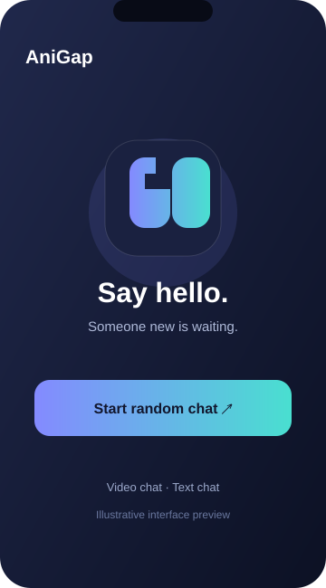
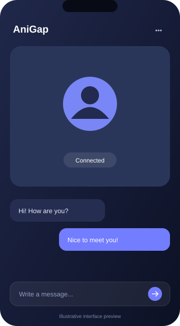
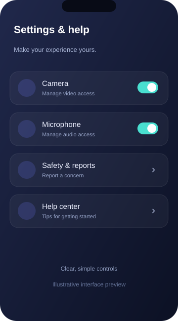

Random video chat
Start a spontaneous conversation and meet someone outside your usual circle.
Meet someone new through random video chat, send a message, and move on whenever you want. A focused experience that keeps the essentials close.
Someone new is waiting.
Start a spontaneous conversation and meet someone outside your usual circle.
Keep the conversation going with quick, convenient messages.
A clean interface keeps the essential conversation controls easy to reach.
Explore a visual preview of the experience.



Illustrative interface previews.
Try AniGap on the web or visit GitHub Releases for the Android download.